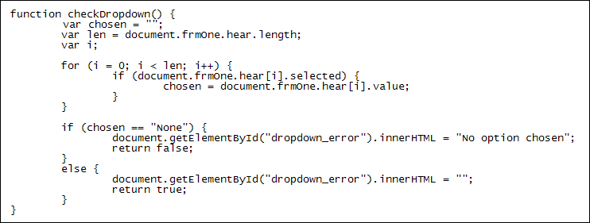
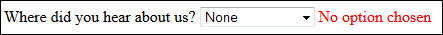

Dropdown Lists
Seven part section: 1 2 3 4 5 6 7
The code to check the dropdown list is more or less the same as for radio buttons. Here it is:

The only difference is in the IF Statement. Between the round brackets we have the following:
document.frmOne.hear[i].selected
Dropdown lists have a selected property at the end. This means whether an item was selected from the list or not. Again, we're looping over all of the items. Whichever item was chosen will be placed in the variable called chosen. But it's the value property we want to place in the variable. This gets you the text of the item on the list.
We want to detect if the user has left it on the default option of "None". If so, it's an error and we can ask the user to try again.
Test your code out. Don't select an item from the list. When you click the submit button you should see this:

Select an item and then click the button again. The error message will vanish.
In the next part, you'll see how to use Javascript to get at your checkboxes.